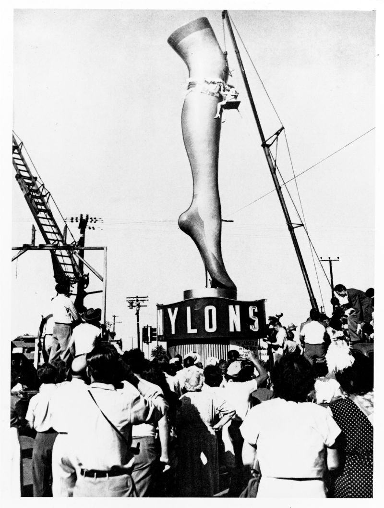

Named after the famous French acrobatic performer Jules Leotard, the leotard is a unisex skin-tight bodice that covers the torso, and sometimes the arms and legs.
In the 19th century, the use of leotards was usually limited to performers and acrobats. Soon in the 1920's however, the cut began to influence swimsuit design and soon, for its practicality and comfort, expanded to become the go-to outfit for cyclers, ballerinas, fitness trainers, and more.
The aerobics fashion craze in the 1970's formally introduced the leotard as an everyday fashion piece.
Image: Jane Fonda's Workout
However, this would not have been possible without the creation of materials such as nylon and spandex in the synthetic textile revolution pioneered by Dupont and Bell labs.

The newly developed technology to spin cheap and highly versatile, relatively durable and inexpensive fabrics out of plastic would forever change the fashion industry, paving the way for not just a whole new breadth of possibilities in design and draping.
With the now widespread availability of stretchy and very cheap textiles, the range of "achievable" cuts and silhouettes (in terms of ease of production in an industrial scale)
gave designers and fashion companies a lot of freedom to play with new styles with less concerns about tailoring and sizing.
And thus the cheap, petroleum based fast fashion industry was born.
Img1: Laquan Smith, FW2020
Img2: Bella Hadid in Thierry Mugler, SS20

Top: Marine Serre, SS19
Top Right: Black is King, Marine Serre, 2020
Bottom Right: Shuting Qiu

Moncler x Richard Quinn, AW2020

Wesley Harriot, SS20


 With the right stretchy fabric, making a leotard requires very few seams and very little tailoring. The main part is the torso suit, which consists of a front and back panel that cover the chest area. From there, arm and leg patterns can also be inserted. High collars, beading, embroidery, and metalwork can also be incorporated onto the leotard for embellishment.
With the right stretchy fabric, making a leotard requires very few seams and very little tailoring. The main part is the torso suit, which consists of a front and back panel that cover the chest area. From there, arm and leg patterns can also be inserted. High collars, beading, embroidery, and metalwork can also be incorporated onto the leotard for embellishment.